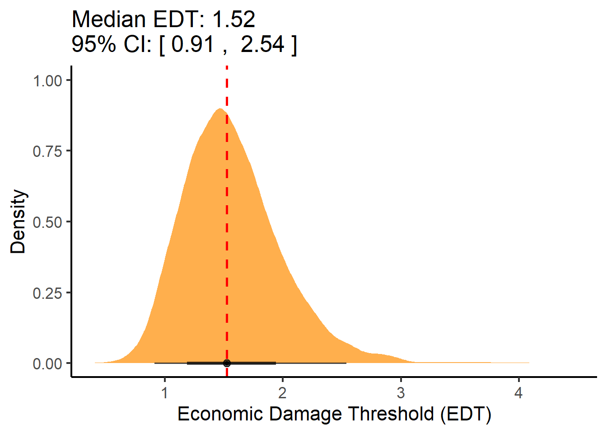

library(bulkreadr)
library(tidyverse)
library(readr)
library(metafor)
library(psych)
library(cowplot)
library(patchwork)
library(r4pde)
library(broom)
library(metafor)
library(lme4)
library(writexl)
library(gsheet)
library(readxl)
library(ggdist)Data importation
Load of the packages.
Importation of data and reorganization for the analysis.
lsd_2021 <- read_csv("lsd2021.csv")
lsd_2022 <- read_csv("lsd2022.csv")
lsd_2023 <- read_csv("lsd2023.csv")
lsd_2024 <- read_csv("lsd2024.csv")
lsd_combined <- rbind(lsd_2021, lsd_2022, lsd_2023, lsd_2024)
lsd_combined <- lsd_combined |>
separate(LOCAL_YEAR, into = c("local", "year"), sep = "_", remove = FALSE)
lsd_combined$trial <- as.integer(factor(lsd_combined$LOCAL_YEAR, levels = unique(lsd_combined$LOCAL_YEAR)))
lsd_combined <- lsd_combined |>
select(LOCAL_YEAR, trial, year, local, trat, sev, yld)
write_csv(lsd_combined, "lsd_combined.csv")See the structure of the data set:
lsd_combined# A tibble: 1,747 × 7
LOCAL_YEAR trial year local trat sev yld
<chr> <int> <chr> <chr> <dbl> <dbl> <dbl>
1 4_2021 1 2021 4 1 28 4208.
2 4_2021 1 2021 4 1 28 4220.
3 4_2021 1 2021 4 1 29 4252.
4 4_2021 1 2021 4 1 27 4433.
5 4_2021 1 2021 4 2 12 4073.
6 4_2021 1 2021 4 2 13 4296.
7 4_2021 1 2021 4 2 13 4105.
8 4_2021 1 2021 4 2 14 4405.
9 4_2021 1 2021 4 3 9 4211.
10 4_2021 1 2021 4 3 9.5 4515.
# ℹ 1,737 more rowsData visualization
Summarizing the data.
lsd_combined_mean <- lsd_combined |>
group_by(trat, trial, year, local) |>
summarise(mean_sev = mean(sev),
mean_yld = mean(yld))a1 <- lsd_combined_mean |>
ggplot(aes(mean_sev)) +
geom_histogram(binwidth = 3, fill = "white", color = "black", size = 1) +
theme_minimal_hgrid() +
labs(x = "Severity (%)", y = "") +
scale_x_continuous(limits = c(0, 100), breaks = c(seq(0, 100, by = 25), 100)) +
geom_vline(xintercept = 17.29, size = 1.5, linetype = 2)
a2 <- lsd_combined_mean |>
ggplot(aes(mean_yld)) +
geom_histogram(fill = "white", color = "black", linewidth = 1)+
theme_minimal_hgrid() +
labs(x = "Yield (kg/ha)", y = "") +
geom_vline(xintercept = 4220, size = 1.5, linetype = 2)
(a1+a2)Individual regressions
Visualizing the regression for each trial.
lsd_combined_mean |>
ggplot(aes(mean_sev, mean_yld))+
geom_smooth(method = "lm", se = FALSE, color = "black", fullrange = TRUE) +
geom_point(color = "black", shape = 1) +
facet_wrap(~trial,
ncol = 5) +
scale_y_continuous(limits = c(0, 6000)) +
scale_x_continuous(limits = c(0, 100)) +
theme_cowplot() +
labs(y = "Yield (kg/ha)", x = "Severity (%)")Let’s see all the regression lines in the same plot.
r_regression = lsd_combined %>%
filter(sev != "NA") %>%
filter(!yld == "NA") %>%
dplyr::select( sev, yld, LOCAL_YEAR) %>%
do({
model <- lm(.$yld ~ .$sev + factor(.$LOCAL_YEAR))
tidy_model <- tidy(model)
confint_model <- confint(model) # Calcula os intervalos de confiança
bind_cols(tidy_model, confint_model)
})
r_regression = r_regression |>
filter(term %in% c("(Intercept)",".$sev"))
r_regression[r_regression$term== "(Intercept)",c("parameters")] <- "Intercept"
r_regression[r_regression$term== ".$sev",c("parameters")] <- "Slope"
i <- 1
while (i <= nrow(r_regression)) {
if (r_regression$parameters[i] == "Slope" && r_regression$estimate[i] > 0) {
r_regression <- r_regression[-c(i, i - 1), ]
i <- i - 2
}
i <- i + 1
}
colnames(r_regression) = c("term", "estimate", "std.error", "statistic", "p.value", "low", "high", "parameters")
r_regression = r_regression |>
filter(term %in% c("(Intercept)",".$sev"))
r_regression$pil <- c(3074.0281, -43.8480)
r_regression$piu <- c(6104.0960, -1.3186)r_regression = lsd_combined %>%
filter(sev != "NA") %>%
filter(!yld == "NA") %>%
dplyr::select(sev, yld, LOCAL_YEAR) %>%
group_by(LOCAL_YEAR) %>%
do({
model <- lm(.$yld ~ .$sev)
tidy_model <- tidy(model)
confint_model <- confint(model)
bind_cols(tidy_model, confint_model)
})
r_regression = r_regression |>
filter(term %in% c("(Intercept)",".$sev"))
r_regression[r_regression$term== "(Intercept)",c("parameters")] <- "Intercept"
r_regression[r_regression$term== ".$sev",c("parameters")] <- "Slope"
i <- 1
while (i <= nrow(r_regression)) {
if (r_regression$parameters[i] == "Slope" && r_regression$estimate[i] > 0) {
# Remove a linha do Slope e a linha do Intercept correspondente
r_regression <- r_regression[-c(i, i - 1), ]
# Atualiza o índice, pois duas linhas foram removidas
i <- i - 2
}
i <- i + 1
}
slope_coefficient = r_regression |>
filter(parameters == "Slope") |>
group_by(LOCAL_YEAR) |>
summarise(
Slope = estimate
)
slope_coefficient[,1] = NULL
slope_coefficient |>
filter(!Slope == "NA") |>
summarise(
mean = mean(Slope))# A tibble: 1 × 1
mean
<dbl>
1 -24.7intercept_coefficient = r_regression |>
filter(parameters == "Intercept") |>
group_by(LOCAL_YEAR) |>
summarise(
Intercept = estimate
)
intercept_coefficient[,1] = NULL
mean(intercept_coefficient$Intercept)[1] 4608.184sd(intercept_coefficient$Intercept)[1] 793.1929regression = cbind(slope_coefficient,intercept_coefficient)ggplot() +
geom_point(aes(x = 0:100, y = seq(0,7000,by = 70)), color = NA)+
scale_y_continuous(breaks = c(0, 1000,2000,3000, 4000,5000,6000,7000),
limits = c(0, 7000))+
geom_abline(data = regression, aes(slope = Slope, intercept = Intercept), size = 1, alpha = 0.5, color = "gray")+
labs(x = "LSD Severity (%)", y = "Yield (kg/ha) ")+
theme_classic()+
theme(text = element_text(size = 20),
axis.text.x = element_text(size = 18),
axis.text.y = element_text(size = 18))Now, let’s see a population-average prediction (solid black line) with the corresponding 95% confidence interval (dashed black lines) and 95% prediction interval (dashed gray lines):
r_regression2 = lsd_combined %>%
filter(sev != "NA") %>%
filter(!yld == "NA") %>%
dplyr::select( sev, yld, LOCAL_YEAR) %>%
do({
model <- lm(.$yld ~ .$sev + factor(.$LOCAL_YEAR))
tidy_model <- tidy(model)
confint_model <- confint(model) # Calcula os intervalos de confiança
bind_cols(tidy_model, confint_model)
})
r_regression2 = r_regression2 |>
filter(term %in% c("(Intercept)",".$sev"))
r_regression2[r_regression2$term== "(Intercept)",c("parameters")] <- "Intercept"
r_regression2[r_regression2$term== ".$sev",c("parameters")] <- "Slope"
i <- 1
while (i <= nrow(r_regression2)) {
if (r_regression2$parameters[i] == "Slope" && r_regression2$estimate[i] > 0) {
r_regression2 <- r_regression2[-c(i, i - 1), ]
i <- i - 2
}
i <- i + 1
}
colnames(r_regression2) = c("term", "estimate", "std.error", "statistic", "p.value", "low", "high", "parameters")
r_regression2 = r_regression2 |>
filter(term %in% c("(Intercept)",".$sev"))
r_regression2$pil <- c(3074.0281, -43.8480)
r_regression2$piu <- c(6104.0960, -1.3186)lsd_combined |>
ggplot(aes(sev, yld)) +
geom_point(color = "NA")+
scale_y_continuous(breaks = c(0, 1000, 2000, 3000, 4000, 5000, 6000, 7000),
limits = c(2000, 7000))+
scale_x_continuous(breaks = c(0, 25, 50, 75, 100),
limits = c(0, 100))+
geom_abline(data =r_regression2, aes(slope = estimate[2], intercept = estimate[1]), size = 1.5, color = "black")+
geom_abline(data = r_regression2, aes(intercept = high[1], slope = high[2]), size = .51, linetype = 2)+ #upper ci
geom_abline(data = r_regression2, aes(intercept = low[1], slope = low[2]), size = .51, linetype = 2)+ #low ci
geom_abline(data = r_regression2, aes(intercept = piu[1], slope = piu[2]), size = 2, linetype = 2, color = "darkgray")+ #upper pi
geom_abline(data = r_regression2, aes(intercept = pil[1], slope = pil[2]), size = 2, linetype = 2, color = "darkgray")+ #low pi
labs(x = "LSD Severity (%)", y = "Yield (kg/ha) ")+
theme_classic()+
theme(text = element_text(size = 20),
axis.text.x = element_text(size = 18),
axis.text.y = element_text(size = 18))
Meta-analytic models
To be included in the analysis, trials had to show a minimum difference of 5 percentage points between the lowest and highest disease severity within the study.
sev_dif <- lsd_combined |>
group_by(trial) |>
summarize(sev_max = max(sev, na.rm = TRUE),
sev_min = min(sev, na.rm = TRUE),
sev_difference = sev_max - sev_min)
# none with difference of sev < 5%As none of the trials had a difference of sev < 5, all trials were used in meta-analysis.
Correlation
In this section we are going to analyse if there is correlation between the DFC’s severity at the field and the soybean yield.
Preparation of the data
For the meta-analytic analysis, it is necessary to prepare the data and calculate the Pearson’s correlations (r) between disease severity and yield for each study in the data. These calculated Pearson correlations will be transformed using Fisher’s Z (Z) transformation to normalize the distribution of the data. Additionally, the variance (V) will be calculated.
correlation_data <- lsd_combined %>%
group_by(LOCAL_YEAR) %>%
summarise(r_sev_yld = cor(sev, yld),
n = n(),
Z_sev_yld = 0.5*log((1+r_sev_yld)/(1-r_sev_yld)),
V = 1/(n-3),
vd_sev_yld = 1/(2*(1-r_sev_yld)/n-3)) |>
filter(r_sev_yld != "NA") |>
filter(n > 4)Correlations analysis
Now we are going to calculate the mean correlation utilizing the meta-analytic approach before used by Dalla Lana et al. (2015).
meta_cor_sev_yld <- rma(Z_sev_yld, V, data = correlation_data)
meta_cor_sev_yld
Random-Effects Model (k = 39; tau^2 estimator: REML)
tau^2 (estimated amount of total heterogeneity): 0.0751 (SE = 0.0229)
tau (square root of estimated tau^2 value): 0.2740
I^2 (total heterogeneity / total variability): 75.81%
H^2 (total variability / sampling variability): 4.13
Test for Heterogeneity:
Q(df = 38) = 156.7282, p-val < .0001
Model Results:
estimate se zval pval ci.lb ci.ub
-0.5487 0.0506 -10.8418 <.0001 -0.6479 -0.4495 ***
---
Signif. codes: 0 '***' 0.001 '**' 0.01 '*' 0.05 '.' 0.1 ' ' 1Z_sev_yld <- meta_cor_sev_yld$b
metafor::predict.rma(meta_cor_sev_yld)
pred se ci.lb ci.ub pi.lb pi.ub
-0.5487 0.0506 -0.6479 -0.4495 -1.0948 -0.0026 R_sev_yld <- fisherz2r(Z_sev_yld)
R_sev_yld [,1]
intrcpt -0.4995349predict(meta_cor_sev_yld, transf = transf.ztor)
pred ci.lb ci.ub pi.lb pi.ub
-0.4995 -0.5702 -0.4215 -0.7986 -0.0026 Graphics r correlation
r_sev_yld <- correlation_data %>%
ggplot(aes(r_sev_yld)) +
geom_histogram(bins = 10,
color = "black",
fill = "white",
alpha = 0.5,
size = 1) +
ylab("Frequency") +
xlab(expression("Pearson's correlation coefficient (" * italic(r) * ")")) +
theme_minimal_hgrid()
r_sev_yldZ_sev_yld <- correlation_data %>%
ggplot(aes(Z_sev_yld))+
geom_histogram(bins = 10,
color = "black",
fill = "white",
alpha = 0.5,
size = 1) +
ylab("Frequency") +
xlab(expression("Fisher's transformation of (" * italic(r) * ") (" * italic(Z) * ")")) +
theme_minimal_hgrid()
Z_sev_yld(r_sev_yld | Z_sev_yld)Random effects models
# individual regressions
fit_all <- lsd_combined%>%
group_by(LOCAL_YEAR) |>
do(broom::tidy(lm(.$yld ~ .$sev), conf.int=TRUE))
summary(fit_all) LOCAL_YEAR term estimate std.error
Length:78 Length:78 Min. : -81.57 Min. : 2.176
Class :character Class :character 1st Qu.: -21.61 1st Qu.: 5.886
Mode :character Mode :character Median :1373.14 Median : 28.228
Mean :2286.92 Mean : 59.564
3rd Qu.:4441.59 3rd Qu.: 94.249
Max. :7012.62 Max. :304.039
statistic p.value conf.low conf.high
Min. :-12.340 Min. :0.000000 Min. :-129.41 Min. : -41.952
1st Qu.: -3.440 1st Qu.:0.000000 1st Qu.: -36.98 1st Qu.: -7.762
Median : 7.938 Median :0.000000 Median :1313.37 Median :1452.147
Mean : 24.851 Mean :0.030606 Mean :2166.64 Mean :2407.187
3rd Qu.: 49.820 3rd Qu.:0.001147 3rd Qu.:4246.85 3rd Qu.:4832.109
Max. :113.791 Max. :0.983106 Max. :6404.02 Max. :7621.222 # data preparation
Intercepts <- fit_all |>
filter(term == "(Intercept)")
Slopes <- fit_all |>
filter(term == ".$sev")# Model for the intercepts
dfc1 <- rma(yi = estimate, sei = std.error, data = Intercepts)
summary(dfc1)
Random-Effects Model (k = 39; tau^2 estimator: REML)
logLik deviance AIC BIC AICc
-306.9312 613.8624 617.8624 621.1376 618.2053
tau^2 (estimated amount of total heterogeneity): 582167.4365 (SE = 137234.2326)
tau (square root of estimated tau^2 value): 762.9990
I^2 (total heterogeneity / total variability): 99.08%
H^2 (total variability / sampling variability): 108.35
Test for Heterogeneity:
Q(df = 38) = 4151.1623, p-val < .0001
Model Results:
estimate se zval pval ci.lb ci.ub
4589.0620 123.8838 37.0433 <.0001 4346.2543 4831.8698 ***
---
Signif. codes: 0 '***' 0.001 '**' 0.01 '*' 0.05 '.' 0.1 ' ' 1metafor::predict.rma(dfc1)
pred se ci.lb ci.ub pi.lb pi.ub
4589.0620 123.8838 4346.2543 4831.8698 3074.0281 6104.0960 # Model for the slopes
dfc2 <- rma(yi = estimate, sei = std.error, data = Slopes)
summary(dfc2)
Random-Effects Model (k = 39; tau^2 estimator: REML)
logLik deviance AIC BIC AICc
-151.8577 303.7154 307.7154 310.9906 308.0583
tau^2 (estimated amount of total heterogeneity): 113.4790 (SE = 36.0216)
tau (square root of estimated tau^2 value): 10.6527
I^2 (total heterogeneity / total variability): 83.80%
H^2 (total variability / sampling variability): 6.17
Test for Heterogeneity:
Q(df = 38) = 278.2120, p-val < .0001
Model Results:
estimate se zval pval ci.lb ci.ub
-22.5833 2.0576 -10.9756 <.0001 -26.6161 -18.5505 ***
---
Signif. codes: 0 '***' 0.001 '**' 0.01 '*' 0.05 '.' 0.1 ' ' 1metafor::predict.rma(dfc2)
pred se ci.lb ci.ub pi.lb pi.ub
-22.5833 2.0576 -26.6161 -18.5505 -43.8480 -1.3186 b1 <- fit_all |>
filter(term == "(Intercept)") |>
ggplot(aes(x = estimate))+
geom_histogram(bins = 15, color = "black", fill = "white", alpha = 0.5, size = 1)+
theme_minimal_hgrid()+
labs(x = "Intercept", y = "Frequency") +
theme(
axis.title.x = element_text(size = 20),
axis.title.y = element_text(size = 20),
axis.text.x = element_text(size = 18),
axis.text.y = element_text(size = 18))
b2 <- fit_all |>
filter(term == ".$sev") |>
ggplot(aes(x = estimate))+
geom_histogram(bins = 15, color = "black", fill = "white", alpha = 0.5, size = 1)+
theme_minimal_hgrid()+
labs(x = "Slope", y = "Frequency")+
theme(
axis.title.x = element_text(size = 20),
axis.title.y = element_text(size = 20),
axis.text.x = element_text(size = 16),
axis.text.y = element_text(size = 16))
(b1 + b2)Let’s make a forest plot that shows the distribution of the ꞵ1:
Slopes2 <- Slopes
Slopes2$ENUM_LOCAL_YEAR <- as.integer(factor(Slopes2$LOCAL_YEAR, levels = unique(Slopes2$LOCAL_YEAR)))
Slopes2 |>
ggplot(aes(reorder(ENUM_LOCAL_YEAR, +estimate), estimate)) +
geom_point(size = 3) +
geom_errorbar(aes(ymin = conf.low,
ymax = conf.high),
width = 0.5,
linetype = "solid") +
geom_hline(yintercept = 0, linetype = "dashed", color = "black") +
labs(x = "Study", y = "Slope")+
theme_half_open()+
coord_flip()+
theme(text = element_text(size = 20),
axis.text.x = element_text(size = 18),
axis.text.y = element_text(size = 13))
Moderator variables
Disease pressure (low severity = ≤35% and high severity = >35%), yield class (low = ≤3,745 kg/ha and high = >3,745 kg/ha), region (trials conducted below 20°S were classified as south, and others as north), altitude (<635 m or ≥635 m above sea level), and year were included as categorical moderators that could explain at least part of the observed heterogeneity and expanded the model from a random to a mixed effects model.
moderators <- read_csv("moderators.csv")
class_df <- moderators[, c("LOCAL_YEAR", "yield_class", "sev_class", "region_class", "altitude_class", "YEAR")]
#preparing data: INTERCEPTS
int_class <- left_join(Intercepts, class_df, by = "LOCAL_YEAR")
int_class <- int_class |>
group_by(LOCAL_YEAR) |>
mutate(mean_estimate = mean(estimate)) |>
distinct(LOCAL_YEAR, .keep_all = TRUE)
#preparing data: SLOPES
slope_class <- left_join(Slopes, class_df, by = "LOCAL_YEAR")
slope_class <- slope_class |>
group_by(LOCAL_YEAR) |>
mutate(mean_estimate = mean(estimate)) |>
distinct(LOCAL_YEAR, .keep_all = TRUE)Yield Class
# Intercept
lsd1 <- rma(yi = estimate ~ factor(yield_class), sei = std.error, data = int_class)
summary(lsd1)
Mixed-Effects Model (k = 39; tau^2 estimator: REML)
logLik deviance AIC BIC AICc
-289.5481 579.0962 585.0962 589.9290 585.8235
tau^2 (estimated amount of residual heterogeneity): 341856.6747 (SE = 83061.6425)
tau (square root of estimated tau^2 value): 584.6851
I^2 (residual heterogeneity / unaccounted variability): 98.40%
H^2 (unaccounted variability / sampling variability): 62.55
R^2 (amount of heterogeneity accounted for): 41.28%
Test for Residual Heterogeneity:
QE(df = 37) = 2401.9457, p-val < .0001
Test of Moderators (coefficient 2):
QM(df = 1) = 25.9696, p-val < .0001
Model Results:
estimate se zval pval ci.lb
intrcpt 4128.8991 130.9238 31.5367 <.0001 3872.2932
factor(yield_class)>3745 978.5704 192.0258 5.0960 <.0001 602.2068
ci.ub
intrcpt 4385.5050 ***
factor(yield_class)>3745 1354.9340 ***
---
Signif. codes: 0 '***' 0.001 '**' 0.01 '*' 0.05 '.' 0.1 ' ' 1# Slope
lsd2 <- rma(yi = estimate ~ factor(yield_class), sei = std.error, data = slope_class)
summary(lsd2)
Mixed-Effects Model (k = 39; tau^2 estimator: REML)
logLik deviance AIC BIC AICc
-148.0231 296.0463 302.0463 306.8790 302.7735
tau^2 (estimated amount of residual heterogeneity): 112.1485 (SE = 36.2840)
tau (square root of estimated tau^2 value): 10.5900
I^2 (residual heterogeneity / unaccounted variability): 83.21%
H^2 (unaccounted variability / sampling variability): 5.96
R^2 (amount of heterogeneity accounted for): 1.17%
Test for Residual Heterogeneity:
QE(df = 37) = 252.9619, p-val < .0001
Test of Moderators (coefficient 2):
QM(df = 1) = 0.7392, p-val = 0.3899
Model Results:
estimate se zval pval ci.lb ci.ub
intrcpt -24.2601 2.8342 -8.5598 <.0001 -29.8151 -18.7052
factor(yield_class)>3745 3.5257 4.1008 0.8598 0.3899 -4.5117 11.5630
intrcpt ***
factor(yield_class)>3745
---
Signif. codes: 0 '***' 0.001 '**' 0.01 '*' 0.05 '.' 0.1 ' ' 1Sev Class
# Intercept
lsd3 <- rma(yi = estimate ~ factor(sev_class), sei = std.error, data = int_class)
summary(lsd3)
Mixed-Effects Model (k = 39; tau^2 estimator: REML)
logLik deviance AIC BIC AICc
-296.5363 593.0726 599.0726 603.9054 599.7999
tau^2 (estimated amount of residual heterogeneity): 511855.9041 (SE = 122703.5937)
tau (square root of estimated tau^2 value): 715.4411
I^2 (residual heterogeneity / unaccounted variability): 98.92%
H^2 (unaccounted variability / sampling variability): 92.70
R^2 (amount of heterogeneity accounted for): 12.08%
Test for Residual Heterogeneity:
QE(df = 37) = 3462.4332, p-val < .0001
Test of Moderators (coefficient 2):
QM(df = 1) = 6.0768, p-val = 0.0137
Model Results:
estimate se zval pval ci.lb
intrcpt 4323.0295 158.4105 27.2901 <.0001 4012.5507
factor(sev_class)>35 575.5379 233.4732 2.4651 0.0137 117.9388
ci.ub
intrcpt 4633.5083 ***
factor(sev_class)>35 1033.1370 *
---
Signif. codes: 0 '***' 0.001 '**' 0.01 '*' 0.05 '.' 0.1 ' ' 1# Slope
lsd4 <- rma(yi = estimate ~ factor(sev_class), sei = std.error, data = slope_class)
summary(lsd4)
Mixed-Effects Model (k = 39; tau^2 estimator: REML)
logLik deviance AIC BIC AICc
-147.8102 295.6204 301.6204 306.4532 302.3477
tau^2 (estimated amount of residual heterogeneity): 112.4247 (SE = 36.2749)
tau (square root of estimated tau^2 value): 10.6031
I^2 (residual heterogeneity / unaccounted variability): 83.65%
H^2 (unaccounted variability / sampling variability): 6.12
R^2 (amount of heterogeneity accounted for): 0.93%
Test for Residual Heterogeneity:
QE(df = 37) = 251.9188, p-val < .0001
Test of Moderators (coefficient 2):
QM(df = 1) = 1.1385, p-val = 0.2860
Model Results:
estimate se zval pval ci.lb ci.ub
intrcpt -25.1493 3.1643 -7.9478 <.0001 -31.3512 -18.9474
factor(sev_class)>35 4.4326 4.1543 1.0670 0.2860 -3.7096 12.5749
intrcpt ***
factor(sev_class)>35
---
Signif. codes: 0 '***' 0.001 '**' 0.01 '*' 0.05 '.' 0.1 ' ' 1Region Class
# Intercept
lsd5 <- rma(yi = estimate ~ factor(region_class), sei = std.error, data = int_class)
summary(lsd5)
Mixed-Effects Model (k = 39; tau^2 estimator: REML)
logLik deviance AIC BIC AICc
-299.1793 598.3586 604.3586 609.1914 605.0859
tau^2 (estimated amount of residual heterogeneity): 593146.1481 (SE = 141675.2832)
tau (square root of estimated tau^2 value): 770.1598
I^2 (residual heterogeneity / unaccounted variability): 99.06%
H^2 (unaccounted variability / sampling variability): 106.90
R^2 (amount of heterogeneity accounted for): 0.00%
Test for Residual Heterogeneity:
QE(df = 37) = 4151.0063, p-val < .0001
Test of Moderators (coefficient 2):
QM(df = 1) = 0.3622, p-val = 0.5473
Model Results:
estimate se zval pval ci.lb
intrcpt 4633.8784 145.3885 31.8724 <.0001 4348.9222
factor(region_class)south -171.3995 284.7953 -0.6018 0.5473 -729.5880
ci.ub
intrcpt 4918.8346 ***
factor(region_class)south 386.7890
---
Signif. codes: 0 '***' 0.001 '**' 0.01 '*' 0.05 '.' 0.1 ' ' 1# Slope
lsd6 <- rma(yi = estimate ~ factor(region_class), sei = std.error, data = slope_class)
summary(lsd6)
Mixed-Effects Model (k = 39; tau^2 estimator: REML)
logLik deviance AIC BIC AICc
-148.3843 296.7687 302.7687 307.6014 303.4960
tau^2 (estimated amount of residual heterogeneity): 117.4045 (SE = 37.6868)
tau (square root of estimated tau^2 value): 10.8353
I^2 (residual heterogeneity / unaccounted variability): 83.70%
H^2 (unaccounted variability / sampling variability): 6.14
R^2 (amount of heterogeneity accounted for): 0.00%
Test for Residual Heterogeneity:
QE(df = 37) = 277.8803, p-val < .0001
Test of Moderators (coefficient 2):
QM(df = 1) = 0.0042, p-val = 0.9483
Model Results:
estimate se zval pval ci.lb
intrcpt -22.5235 2.4272 -9.2798 <.0001 -27.2807
factor(region_class)south -0.3072 4.7386 -0.0648 0.9483 -9.5947
ci.ub
intrcpt -17.7664 ***
factor(region_class)south 8.9803
---
Signif. codes: 0 '***' 0.001 '**' 0.01 '*' 0.05 '.' 0.1 ' ' 1Altitude Class
# Intercept
lsd7 <- rma(yi = estimate ~ factor(altitude_class), sei = std.error, data = int_class)
summary(lsd7)
Mixed-Effects Model (k = 39; tau^2 estimator: REML)
logLik deviance AIC BIC AICc
-296.1787 592.3574 598.3574 603.1902 599.0847
tau^2 (estimated amount of residual heterogeneity): 502520.5035 (SE = 120529.9355)
tau (square root of estimated tau^2 value): 708.8868
I^2 (residual heterogeneity / unaccounted variability): 98.90%
H^2 (unaccounted variability / sampling variability): 90.66
R^2 (amount of heterogeneity accounted for): 13.68%
Test for Residual Heterogeneity:
QE(df = 37) = 3222.0280, p-val < .0001
Test of Moderators (coefficient 2):
QM(df = 1) = 6.9052, p-val = 0.0086
Model Results:
estimate se zval pval ci.lb
intrcpt 4290.9576 161.4444 26.5785 <.0001 3974.5324
factor(altitude_class)>635 606.2748 230.7181 2.6278 0.0086 154.0755
ci.ub
intrcpt 4607.3828 ***
factor(altitude_class)>635 1058.4740 **
---
Signif. codes: 0 '***' 0.001 '**' 0.01 '*' 0.05 '.' 0.1 ' ' 1# Slope
lsd8 <- rma(yi = estimate ~ factor(altitude_class), sei = std.error, data = slope_class)
summary(lsd8)
Mixed-Effects Model (k = 39; tau^2 estimator: REML)
logLik deviance AIC BIC AICc
-147.5177 295.0354 301.0354 305.8682 301.7627
tau^2 (estimated amount of residual heterogeneity): 110.5075 (SE = 35.8270)
tau (square root of estimated tau^2 value): 10.5123
I^2 (residual heterogeneity / unaccounted variability): 82.93%
H^2 (unaccounted variability / sampling variability): 5.86
R^2 (amount of heterogeneity accounted for): 2.62%
Test for Residual Heterogeneity:
QE(df = 37) = 252.0339, p-val < .0001
Test of Moderators (coefficient 2):
QM(df = 1) = 1.7511, p-val = 0.1857
Model Results:
estimate se zval pval ci.lb
intrcpt -19.5402 3.0628 -6.3799 <.0001 -25.5431
factor(altitude_class)>635 -5.4269 4.1011 -1.3233 0.1857 -13.4650
ci.ub
intrcpt -13.5372 ***
factor(altitude_class)>635 2.6111
---
Signif. codes: 0 '***' 0.001 '**' 0.01 '*' 0.05 '.' 0.1 ' ' 1Year
# Intercept
lsd9 <- rma(yi = estimate ~ factor(YEAR), sei = std.error, data = int_class)
summary(lsd9)
Mixed-Effects Model (k = 39; tau^2 estimator: REML)
logLik deviance AIC BIC AICc
-283.8350 567.6700 577.6700 585.4467 579.7390
tau^2 (estimated amount of residual heterogeneity): 621801.6029 (SE = 152485.2652)
tau (square root of estimated tau^2 value): 788.5440
I^2 (residual heterogeneity / unaccounted variability): 99.05%
H^2 (unaccounted variability / sampling variability): 105.73
R^2 (amount of heterogeneity accounted for): 0.00%
Test for Residual Heterogeneity:
QE(df = 35) = 3396.7094, p-val < .0001
Test of Moderators (coefficients 2:4):
QM(df = 3) = 0.6493, p-val = 0.8850
Model Results:
estimate se zval pval ci.lb ci.ub
intrcpt 4464.2076 327.5334 13.6298 <.0001 3822.2540 5106.1613
factor(YEAR)2022 281.3383 406.2881 0.6925 0.4886 -514.9717 1077.6483
factor(YEAR)2023 62.7112 400.2127 0.1567 0.8755 -721.6912 847.1137
factor(YEAR)2024 103.1685 414.1017 0.2491 0.8033 -708.4558 914.7929
intrcpt ***
factor(YEAR)2022
factor(YEAR)2023
factor(YEAR)2024
---
Signif. codes: 0 '***' 0.001 '**' 0.01 '*' 0.05 '.' 0.1 ' ' 1# Slope
lsd10 <- rma(yi = estimate ~ factor(YEAR), sei = std.error, data = slope_class)
summary(lsd10)
Mixed-Effects Model (k = 39; tau^2 estimator: REML)
logLik deviance AIC BIC AICc
-140.9204 281.8407 291.8407 299.6174 293.9097
tau^2 (estimated amount of residual heterogeneity): 116.8246 (SE = 38.8148)
tau (square root of estimated tau^2 value): 10.8085
I^2 (residual heterogeneity / unaccounted variability): 82.99%
H^2 (unaccounted variability / sampling variability): 5.88
R^2 (amount of heterogeneity accounted for): 0.00%
Test for Residual Heterogeneity:
QE(df = 35) = 245.5405, p-val < .0001
Test of Moderators (coefficients 2:4):
QM(df = 3) = 0.9656, p-val = 0.8096
Model Results:
estimate se zval pval ci.lb ci.ub
intrcpt -18.9458 5.3640 -3.5321 0.0004 -29.4590 -8.4327 ***
factor(YEAR)2022 -6.5686 6.8029 -0.9656 0.3343 -19.9021 6.7649
factor(YEAR)2023 -3.1895 6.5049 -0.4903 0.6239 -15.9389 9.5600
factor(YEAR)2024 -3.5793 6.6400 -0.5391 0.5899 -16.5936 9.4349
---
Signif. codes: 0 '***' 0.001 '**' 0.01 '*' 0.05 '.' 0.1 ' ' 1Relative damage loss
Based on the overall mean of the intercept (β0 = 4,589.06 kg/ha) and the slope (β1 = -22.58 kg/ha) estimated by the random-effects model, the overall relative damage coefficient was estimated at -0.49%.As a example, let’s suppose that to achieve a relative yield of 80%, corresponding to a 20% reduction in yield (yield loss), the severity of LSD would need to reach approximately 40.6%.
df <- data.frame(sev = (seq(0, 100, by = 5)))
df$yield <- 4589.0620 - 22.5833 * df$sev
df$relative <- df$yield *100 / 4589.06
df |>
ggplot(aes(sev, relative)) +
geom_smooth(method = (lm), se = FALSE, color = "black", fullrange = TRUE)+
scale_y_continuous(breaks = c(20, 40, 60, 80, 100),
limits = c(20, 100),
expand = c(0, 0))+
scale_x_continuous(breaks = c(0, 25, 50, 75, 100),
limits = c(0, 100),
expand = c(0, 0))+
labs(x = "LSD Severity (%)", y = "Relative yield (%) ")+
geom_hline(yintercept = 80,
linetype = 2)+
geom_vline(xintercept = c(40.647032772), linetype = 2)+
theme_classic()+
theme(text = element_text(size = 20),
axis.text.x = element_text(size = 18),
axis.text.y = element_text(size = 18))Economic damage threshold
# Function to Simulate EDC
simula_LDE <- function(n, media_rp, sd_rp, eficacia, cd_base, custo_range, preco_range) {
simulacoes <- tibble(
rendimento_potencial = rnorm(n, media_rp, sd_rp),
custo_controle = runif(n, custo_range[1], custo_range[2]),
preco_produto = runif(n, preco_range[1], preco_range[2]),
eficacia = eficacia
) %>%
mutate(
coeficiente_dano = cd_base * rendimento_potencial,
LDE = (custo_controle / (preco_produto * coeficiente_dano)) * eficacia
)
return(simulacoes)
}
n = 5000 # number of simulations
media_rp = 4.6 # in ton/ha
sd_rp = 0.79 # SD of attainable yield
eficacia = rnorm(5000, 0.54, 0.1) # in proportion
cd_base = 0.0049 # 0.49 / 100 -> %/ton
custo_range = c(25, 25) # cust of control (US$)
preco_range = c(393.22, 393.22) # soybean price (US$)
# run the simulation
simula <- simula_LDE(n, media_rp, sd_rp, eficacia, cd_base, custo_range, preco_range)# Make the plots:
simula$median_LDE <- median(simula$LDE)
simula$mean_LDE <- mean(simula$LDE)
# Calculate the 95% confidence interval of EDT
simula$ci_lower <- quantile(simula$LDE, probs = 0.025)
simula$ci_upper <- quantile(simula$LDE, probs = 0.975)
# Plot:
ggplot(simula, aes(x = LDE)) +
stat_halfeye(fill = "darkorange", alpha = 0.7) +
geom_vline(aes(xintercept = median_LDE), color = "red", linetype = "dashed", size = 1) +
labs(title = paste("Median EDT:", round(simula$median_LDE, 2), "\n95% CI: [", round(simula$ci_lower, 2), ", ", round(simula$ci_upper, 2), "]"),
x = "Economic Damage Threshold (EDT)",
y = "Density") +
theme_classic(base_size = 16)
i1 <- ggplot(simula, aes(x = LDE)) +
stat_halfeye(fill = "darkorange", alpha = 0.7) +
geom_vline(aes(xintercept = median(LDE)), color = "red", linetype = "dashed", size = 1) +
annotate("text", x = 3.2, y = 0.90, label = "Median = 1.54%", color = "black", size = 4.5) +
annotate("text", x = 3.2, y = 0.85, label = "95% CI = 0.89%, 2.53%", color = "black", size = 4.5) +
labs(
x = "Economic Damage Threshold (EDT)",
y = "Density"
) +
theme_classic(base_size = 16)
i2 <-simula |>
ggplot(aes(rendimento_potencial, eficacia, color = LDE ))+
geom_point()+
scale_color_viridis_c(labels = scales::number_format(accuracy = 0.1))+
labs(color = "EDT",
x = "Attainable yield (ton/ha)",
y = "Fungicide efficacy (%)") +
theme_classic(base_size = 16)
i1+i2+
plot_annotation(tag_levels = "A")